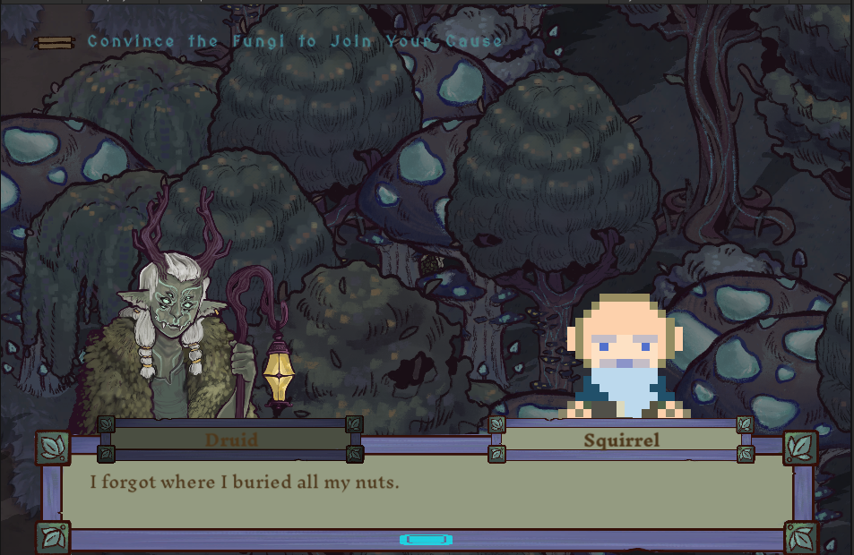

Final Sprint (4/7/24 to 4/21/24)
Final sprint focused on bug fixing and polish updates.
Task 1: Resize Child Sprite
The young child encountered throughout the game, Ollei, was a little bit too small in the overworld. This task was conceptually simple, just increasing the sprite size, but it did involve being thorough. Some cutscenes and world positions could break or look awkward with the new size. I was not in charge of fixing those specific cutscenes, but I playtested every scene with Ollei to double-check these. Changing Ollei's prefab also didn't reflect in-game, so I needed to manually enlargen him in each scene. A merge conflict also obliterated the sprite changes so I also got to speedrun the sprite changes and testing a second time.
Task 2: Mob Cutscene Improvements
The return to cutscenes and the Unity Timeline. I worked on 2 separate cutscenes:
In the initial version of the first cutscene, only 3 villagers approached the player and gave chase. I added more villagers to fill up the screen and accost the player, and each of them chases too! Unfortunately villager run cycles were out of scope, but the villagers definitely feel more like a mob. On top of animating the chase and playtesting the cutscene, I also fixed some bugs such as villagers sharing Animation Controllers with Ollei by default -- suddenly the kid would age into a grown man in totally separate cutscenes!
My goal for the second cutscene was mostly the same, as only a single villager represented the mob so far. This cutscene was relatively lighter since the villagers only needed to walk into frame, but it still required some debugging including preventing the animal squad from being interactable too early. I also pointed out that the animals sort of trample over the crowd at the end of the cutscene (as in the video), so in the following meeting I was also assigned adding a fade to black transition and I implemented that as well.
These two cutscenes easily took up the bulk of my commitment this sprint. My honest feelings -- working with the Unity Timeline can be very finicky, and definitely very time-consuming. I would've preferred to lean into my programming role more, but on the bright side breathing life into cutscenes felt rewarding in its own way.
Task 3: Bug Jam
Less of a concrete task and more a debugging session, our leads Allie and Leo invited the programming and QA team to a bug jam. Almost everyone showed up which was very cool! We spent the session finding and squashing bugs with each other. Notable bugs I worked on were a hardlock(!) bug after losing a battle against the Deer Council, and spamming the space bar too quickly either softlocking or leading to repeated dialogue.
Task 4: Final Bug Reports
The final task for Project Quest (now Soul of the Forest) was a final bug search and report. Anyone
who could contribute before our game showcase played through the game looking for as many issues as possible,
including ones that were known but never formally reported, and logged them while fixing them if possible.
Bugs I logged included the Mega Hit (player's special move) not charging or activating when it should, visual novel sprites
disappearing altogether when pressing space too quickly, and one funny "bug":

The Forest scene has a squirrel hidden so far behind some trees that no one remembered it existed, so it still has a placeholder
old man sprite in both the overworld and dialogue! Guess we forgot where we buried the squirrel.